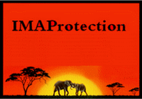

|  | Ce site a été créé par Vanessa LEROY et Abdourahamane OUMAROU, étudiants à l'Institut de Mathématiques Appliquées (IMA) de l’Université Catholique de l’Ouest (UCO) à Angers. Il s’inscrit dans le cadre de notre travail d’apprentissage de la création de site web, pour lequel il nous a été demandé de concevoir et réaliser un site sur un thème de notre choix. Nous avons, comme l'indique le titre du site "IMAProtection", opté pour la protection de l'environnement dont la préservation est capitale pour la survie de notre espèce et celle des autres espèces dont nous dépendons. La plupart de nos informations ont été tirées des différents sites que nous avons pu côtoyer jusqu'ici, en particulier celui du WWF, mais la conception et la réalisation du site sont le fruit de notre propre travail. Nous espérons que vous l’apprécierez. |
IMAprotection se base sur l'action du WWF, qui est une organisation peu représentée, malgré son importance à l'échelle mondiale, et dont beaucoup de gens ignorent l'existence. C'est pourquoi nous allons d'abord vous présenter le WWF, pour mieux comprendre son action :
En espérant que vous allez aimer ce site et que vous vous rallierez à notre cause.
Le World Wildlife Fund, dit autrement le WWF, se bat depuis le 11 septembre 1961 pour la préservation de la diversité biologique. C'est l'une des associations les plus connues et répandues au monde. Sa mission est aussi de lutter contre les différentes formes de pollution et de promouvoir le développement durable. Cette organisation est orientée surtout vers la protection des espèces sauvages, mais afin de les protéger il faut néanmoins protéger leur environnement, c'est pourquoi ses actions se portent de plus en plus sur les changements climatiques.